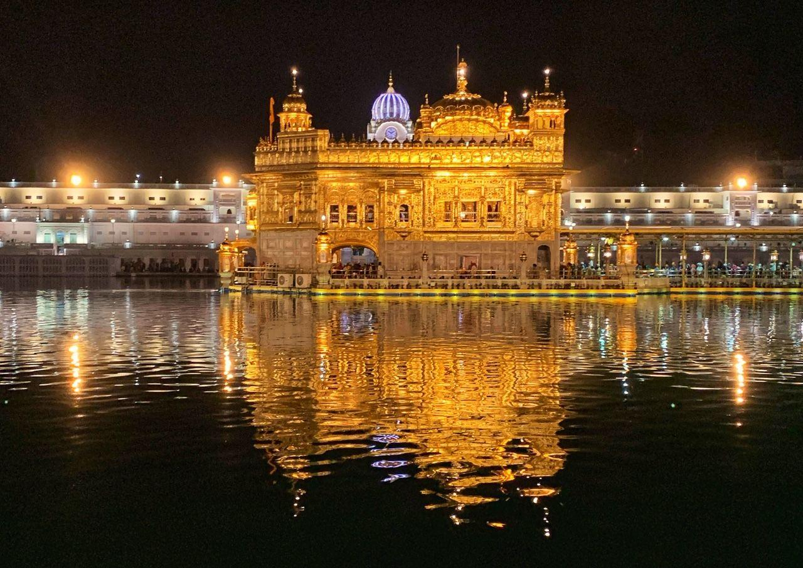
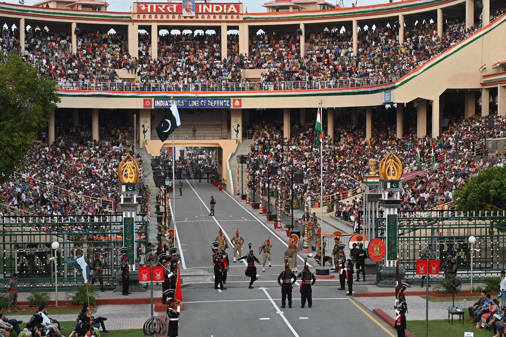
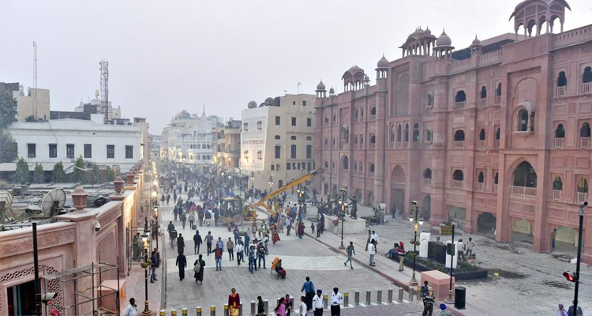
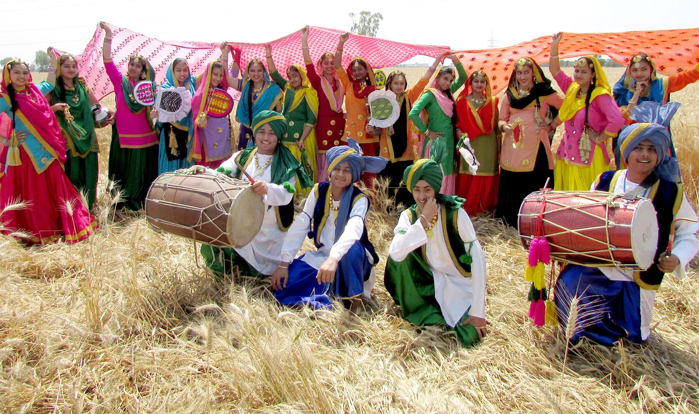

The Land of Five Rivers, Culture & Festivals

The Golden Temple in Amritsar is the holiest Gurdwara of Sikhism and a symbol of peace. Its stunning architecture, gold-plated exterior, and sacred pool attract millions of visitors.
The temple is also famous for its Langar, serving free meals to thousands every day.

Wagah Border between India and Pakistan is famous for the daily flag-lowering ceremony. Visitors witness an energetic display of patriotism, marching, and cultural pride.
It symbolizes the unique culture and spirit of Punjab as well as Indo-Pak relations.

Amritsar is rich in historical heritage including Jallianwala Bagh and cultural traditions. The city reflects Sikh history, colonial architecture, and vibrant street life.
Tourists enjoy heritage walks, local markets, and traditional Punjabi cuisine.

Baisakhi is a major harvest festival in Punjab celebrated with traditional dances like Bhangra and Giddha. It marks the start of the new harvest season and has religious significance for Sikhs.
The festival brings communities together in joy, music, and dance.
Punjab is known for Bhangra and Giddha dances, vibrant festivals, folk music, and Sikh traditions. The state also has rich culinary heritage including Makki di Roti and Sarson da Saag.
From traditional attire to religious rituals, Punjab’s culture reflects energy, devotion, and artistic excellence.